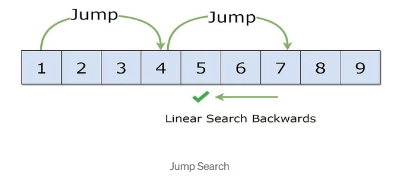
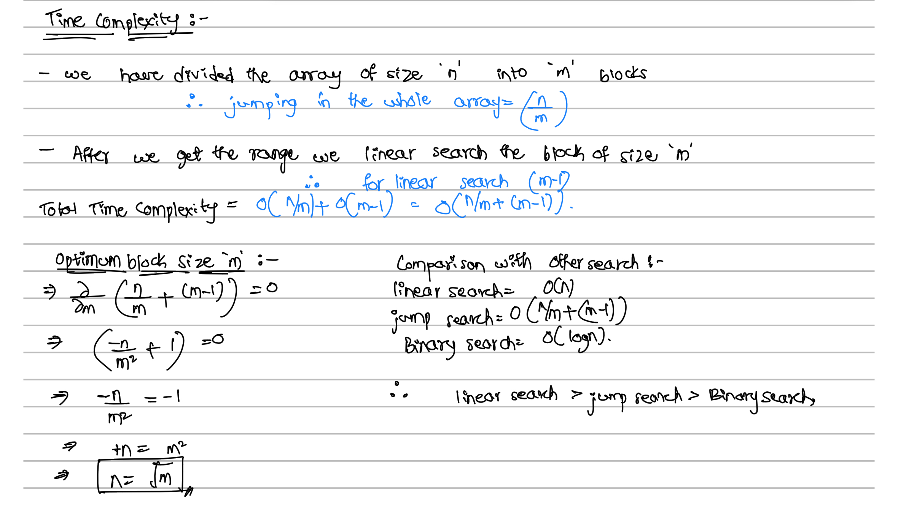
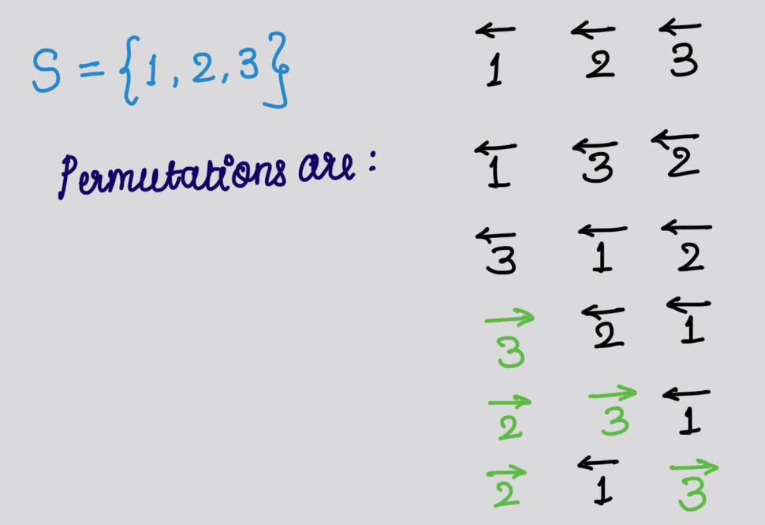

Overview
System state exploration involves analyzing and navigating through different states that a system can assume during its operation. This exploration is important for tasks such as process scheduling, resource allocation, deadlock detection, and system recovery. Understanding and managing system states efficiently ensure stable and optimal system performance.
Jump Search

- Jump search is an algorithm used for searching sorted arrays efficiently. It works by jumping ahead by fixed steps instead of traversing the array sequentially.
- In the context of system state exploration, jump search can be applied to quickly navigate through potential states or configurations of the system. Each “jump” can represent a significant change or transition from one state to another, allowing the exploration of various system configurations.
- It helps in efficiently navigating through different states or configurations, especially when the states can be ordered or categorized in some manner e.g., by priority, resource usage, etc. By jumping between states, the exploration can be faster compared to a linear search, enabling quicker analysis of system behaviors under different conditions.

Johnson Trotter

- The Johnson-Trotter algorithm generates permutations of a set such that only adjacent elements can be swapped. It systematically explores all permutations of a sequence.
- In system state exploration, the Johnson-Trotter algorithm can be used to explore all possible states or configurations of a system. Each permutation generated represents a different state configuration, and by systematically generating and exploring these permutations, one can analyze how the system behaves under various conditions or setups.
- Background Threads: For long-running operations
- Process Priority: How Android prioritizes process execution
- Task Affinity: How activities are grouped together
- Scheduling Algorithms: How the Linux kernel schedules threads
In Android, many components like WorkManager, JobScheduler, or AlarmManager handle tasks background jobs, uploads, syncs. Sometimes we need to, simulate every possible order in which a group of tasks could be scheduled, understand execution order effects e.g., dependencies, resource usage, energy. This is where permutation generation becomes useful, and Johnson-Trotter can be used as it generates each permutation using a minimal number of changes. Perfect for simulations that need to observe step-by-step changes in task order.
- Time Complexity: There are n! permutations and each takes O(n) time to determine the mobile element and perform the swap, the total time is O(n × n!).
- Space: O(n)
References:
- https://medium.com/@udarachinthaka135/jump-search-algorithm-488c0f6e293d
- https://medium.com/@arartawil_96289/searching-algorithm-jump-search-9b1d9c3f4955